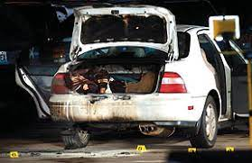
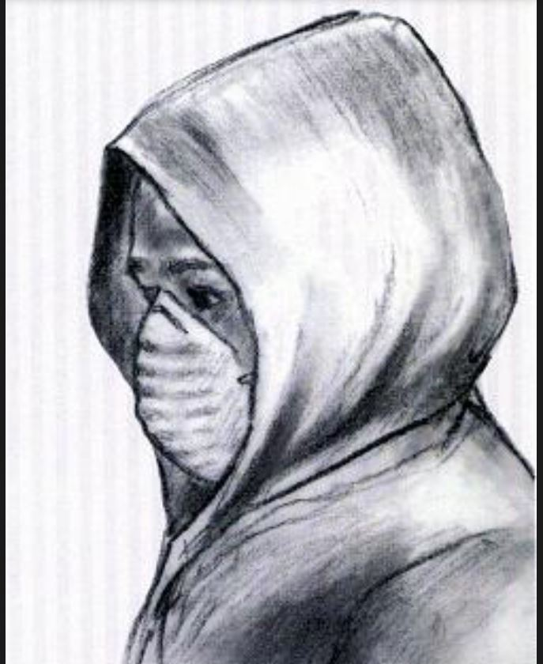
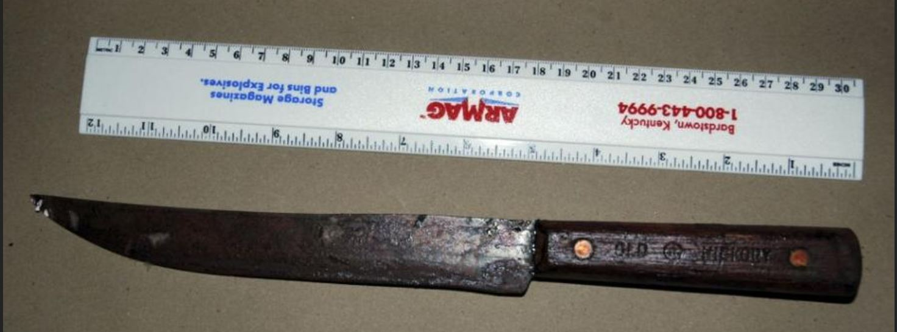
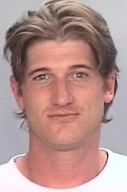

On January 7th, 2005, University of Missouri Police Department and the Columbia, Missouri fire departments responded to what appeared to be a car on fire in the Maryland Avenue parking garage, when they arrived what they found there would set off an eight year investigation into the murder of retired biochemistry professor Jeong H. Im.
Once the flames were extinguished, firefighters opened the trunk of the car to find the partially burned body of professor Im.
At the time of the murder I was a student at the university. I didn't know the man, however, for some reason the case drew my interest, there were too many oddities about it, and it was something that I couldn't let go of. I had questions, many of which have never been answered fully or at all. The first of which was 'Why did someone kill this man?', this will probably never be answered to my satisfaction. The most burning question was about the murderer, who was the assailant? There were eyewitnesses that had described a man who was acting suspicious, wearing a winter coat with the hood over their head, wearing a painters mask and carrying a red gas can. Most of the witnesses didn't feel that the gas can was out of place, after all, sometimes cars run out of gas. After the fire, it became obvious that the person they saw was also the murderer. They described the man as tall, some saying that he was slender, others saying heavy set. They couldn't see the man's face due to the mask he was wearing, but in their collective retrospect, the mask seemed odd.
When Prof. Im's body was removed from the trunk, an 'Old Hickory' brand knife had fallen out of him, and was presumed to be the murder weapon. An autopsy was performed and the coroners report confirmed that the knife was the weapon used to kill the professor.
The MU Police Department detectives had pieced together enough information from witnesses and video from surveilance cameras in the garage and had come up with what they believed to be the narrative of events on that day. Cameras had captured Prof. Im leaving the building across from the parking garage where his office was located. He crossed into the garage and this is where the video of him ends. They concluded that Im was overpowered by the assailant, stabbed multiple times, and placed in the trunk of his own vehicle and was then set on fire to destroy evidence. The suspect, however, had been careless as the car did not erupt into flames hot enough to burn the body as they had intended. He had also left a bloody fingerprint on the victim's shoe. Also collected were three hair strands, one of which was in Prof. Im's hand.
The Search for the Killer Goes Cold
Nine months had passed and the MU police were no closer to finding the killer than they were in the beginning, their leads had dried up and the case went cold. Periodically over the months and years that followed the police would gain a new piece of information, and would ask for the public's help in identification of the suspect. Without any concrete leads, some people began to speculate about the murder, inviting many conspiracy theories, one of which tied the professor to a string of unsolved or suspicious deaths of researchers and scientists across the United States.Conspiracy Theory When a vacuum is created where information should be, the imagination can get carried away and so it did in Columbia. People stopped asking why the 72 year-old retired microbiologist was murdered and started asking, 'What was this man doing?', and, 'What was he working on?' Theories about hitmen made the rounds on the Columbia Tribune's message board, speculating that there were at least two routes the killer could have used to get to Interstate 70, and that it was a mere two-hour drive to either Kansas City, or St. Louis, and from there an airport and off to wherever, never to be seen again. Still unsolved and the well run dry, a tinfoil hat brigade of keyboard sleuths, that was all anyone in Columbia had left when it came to the murder, it was hopeless.
Years passed, I moved back to Kansas City, and the case was still cold, the killer it seemed had gotten away with murder. I was, from the beginning, skeptical of the abilities of the campus police in solving such a large and complicated crime. Because the murder happened on campus, it was squarely on them to solve, the local police departments that had helped them in the past had their own crimes to deal with. I was very critical of their detective work, and I could qualify my thoughts because my father was a homicide detective, and we discussed the case at length. How was a department that mostly dealt with parking tickets, minors in posession of alcohol or marijuana, and the occasional assualt going to solve a major crime? As it turns out, they never did solve it, it solved itself.
"A Hapless Sort of Chap"
Timothy Aaron Hoag by all accounts was a loser. He had a long rap sheet of mostly petty crimes: posession and use of drug paraphernalia; simple assault; petty theft; but not murder. He had been in and out of jail numerous times, and was well known to Columbia law enforcement. The police had him in their warm embrace so many times and yet never once were any of them aware that they had the mastermind killer that had escaped justice. True to Hoag's nature, he was wanted on a series of crimes commited in Illinois and was in the process of being extradited. He was to surrender to the Boone County Sheriff's department in August of 2012, but he never did. Instead, he climbed to the top of the Walnut Street garage, known to locals as 'garagezilla', and threw himself off of it, falling to his death. After his death, the MUPD received a tip from an anonymous source, they wanted to tell their story about the events of January 7th, 2005.
The Denouement
A man had come forward after almost 8 years of keeping Timothy Hoag's secret, and now he wanted to tell what he knew. The witness was a friend of Hoag's and on the morning in question, he said that he had received a call from Timothy asking him to drive him to the Maryland Ave. garage, he said his car was there and he needed to get it, so the man went and picked him up and dropped him off. A couple of hours later, Hoag called the friend back and demanded that he bring him a can of gasoline, and to hurry. The friend just thought that Hoag was having car trouble and agreed to bring him what he needed. The friend said that he met Hoag on the second level of the garage with the can and that Hoag then told the man to stay there and he would be back in a minute. Hoag took the gasoline up the stairwell to the third level, which the man thought was odd, but stayed where he was parked. Minutes later, Hoag returned to the second level with the empty gas can and told the friend to drive. As the two were leaving the garage, the friend noticed smoke billowing out of the third level, but continued to drive away, he took Hoag home and went about his day. The friend told the police that it was only after seeing the news about Prof. Im's death and the circumstances surrounding it that he knew the killer was Hoag. He explained to police that he remained quiet all those years because he feared for the safety of his family, after all, Hoag killed one person, he wasn't going to jeopardize his family. The police gathered a DNA sample from Hoag's body and matched it with the DNA of the strand of hair found in Im's hand, and it was a match, finally they could close the books on the murder of Prof. Jeong H. Im. What had begun in a garage had ended with Hoag's suicide off of a garage, and in a way it's sort of a poetic justice. The man who drove Hoag on that winter morning wasn't charged with any crimes, I think the MU police department was satisfied with having the case closed, maybe the family had endured enough for one lifetime. Still, for me, I have unanswered questions. What was the motive? Why did a petty criminal elevate himself to cold-blooded murder? It is quite a leap from minor drug charges and other misdemeanors to felony murder, and because he conveniently jumped to his death, we will never know the real answers.